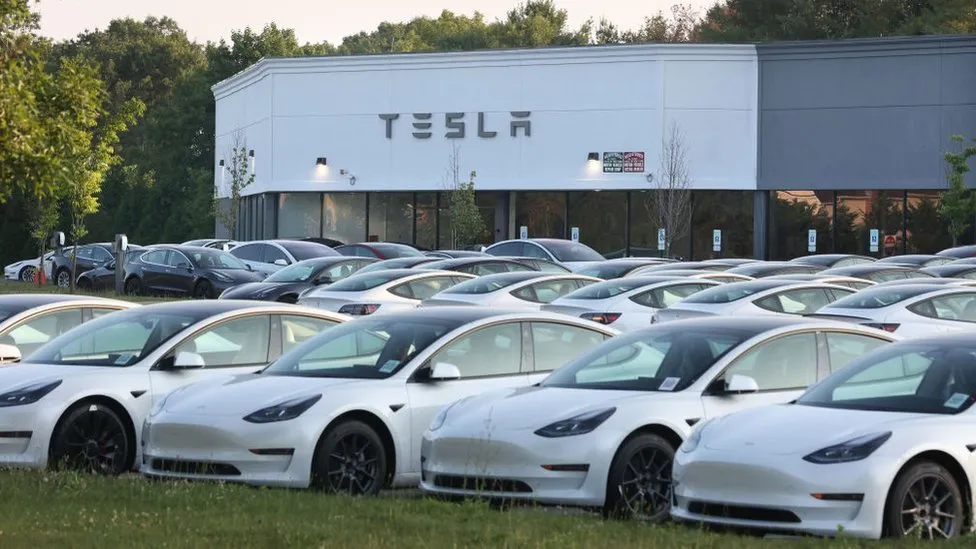

The recall includes its models S, X, 3 and Y, and 7,538 imported vehicles. The problems will be fixed by remote updates to software, meaning the vehicles will not need to be taken to dealerships or garages. It comes less than a month after Tesla recalled two million cars in the US due to autopilot software issues. In May last year, the Chinese regulator said more than a million vehicles may have acceleration and braking system issues. The American electric car giant then discovered problems with assisted driving functions and door-locking systems. The Chinese regulator, the State
Administrationfor Market Regulation (SAMR), described the planned vehicle update as a recall, even though it will happen remotely.  hamk website
10.1.2024